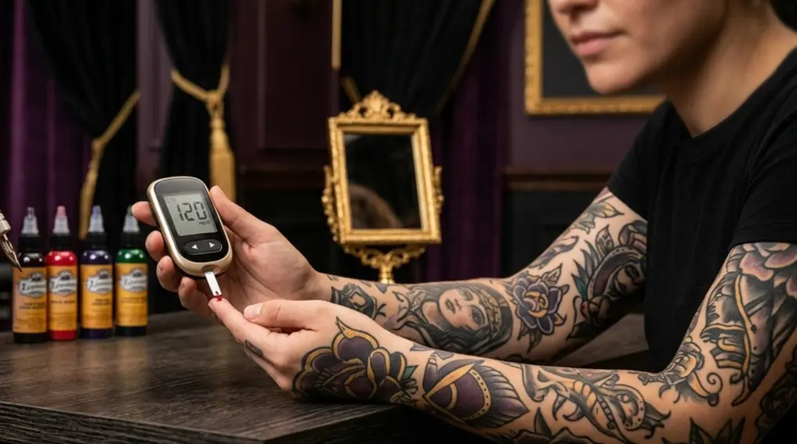
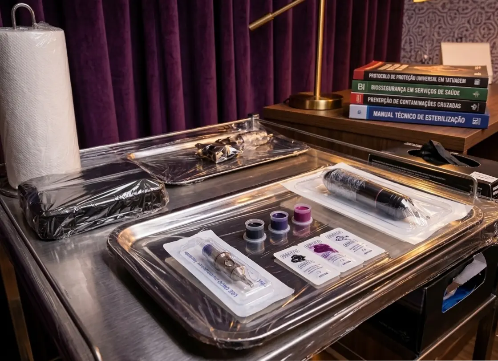
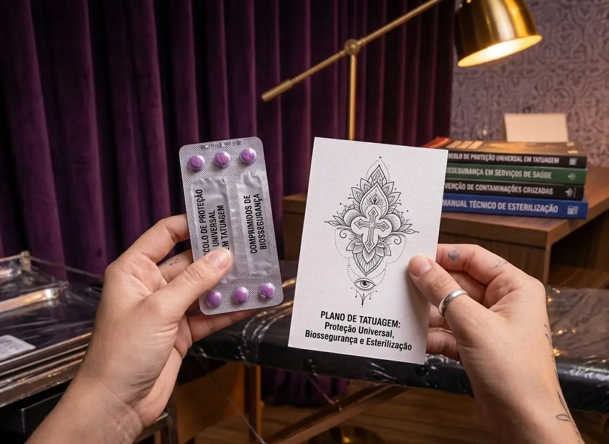

Conformidade Juridica e Biológica
A integridade física de nossos clientes é a prioridade absoluta. Entendemos que a tatuagem é um procedimento invasivo e, por isso, aplicamos um protocolo de biossegurança rígido, superando as exigências sanitárias básicas para garantir um ambiente totalmente seguro e livre de contaminação cruzada.
Protocolos de Esterilização e Higiene
Nosso atendimento segue normas rígidas de controle de infecção:
- Materiais 100% Descartáveis: Todas as agulhas, cartuchos, biqueiras, protetores de cabos e recipientes de tinta (batoques) são estritamente descartáveis.
- Barreira Biológica (Surface Wrapping): Todas as superfícies de contato são devidamente isoladas com barreiras plásticas.
- Tintas Regulamentadas: Utilizamos apenas pigmentos registrados e aprovados pela ANVISA.
Antissepsia e Assepsia
O controle microbiológico é aplicado em todas as etapas do processo:
- Higiene das Mãos: Lavagem rigorosa e uso de antissépticos.
- Preparo da Pele: Limpeza com soluções antissépticas específicas.
- EPIs: Uso obrigatório de luvas, máscaras e toucas.
Infraestrutura Adequada
Seleção de locais de atendimento que possuam:
- Alvará Sanitário: Documentação vigente e em conformidade.
- Gestão de Resíduos: Contrato de coleta de lixo infectante.
Cuidados e Informações
Guia de Cuidados e Cicatrização
Acesse nosso manual completo com o passo a passo para garantir uma cicatrização perfeita.
Acessar GuiaFAQ - Dúvidas Frequentes
Respostas rápidas para as perguntas mais comuns sobre dor, preparo e orçamentos.
Acessar FAQCânone de Conhecimento
Guia de transparência detalhando as bases científicas e simbólicas da Metodologia Nana Borges.
Acessar CânoneCiclos de Vida
Condições de Saúde

Diabetes
Orientações sobre controle glicêmico e cicatrização.
Ler Diretrizes
Soropositividade
Desmistificando preconceitos baseados no protocolo I=I.
Ler Diretrizes
Coagulação e Medicamentos
Como proceder com distúrbios de coagulação ou anticoagulantes.
Ler Diretrizes